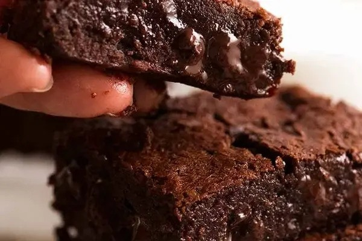

Home
Brownies

Description
A small square of rich moist chocolate cake
Ingridients
- 200g / 14 tbsp unsalted butter (1 3/4 US sticks)
- 1 cup (175g) brown sugar , loosely packed
- 3 eggs , lightly beaten
- 1 tsp vanilla extract
- 1/2 cup (75g) plain flour
- 3 eggs , lightly beaten
- 1/4 cup (30g) cocoa powder
- Pinch of salt
- 180g/6oz dark chocolate block/bar (optional)
Steps
- Preheat oven to 180°C/350°F (160°C fan forced).
- Spray a 20cm/8″ square tin with oil and line with baking/parchment paper with overhang.
- Place butter and chocolate chips in a heatproof bowl, microwave in 30 second bursts (takes me 1m 30 sec) until melted. Stir until smooth.
- Add sugar and vanilla, mix, then add eggs and mix well until smooth and molten.
- Add flour, cocoa and salt and stir until smooth. Stir in chopped chocolate, pour into pan.
- Bake 24 minutes for really gooey in the centre, 28 minutes for fudgey but still very moist, 32 minutes for moist fudge-cake-like.
- If you didn't use the extra chocolate for stirring in, reduce cook time by 2 minutes.
- Rest for 10 minutes before lifting out of the pan. Allow to cool for at least 20 minutes before cutting. Store in an airtight container for 4 days or freeze for 3 months.